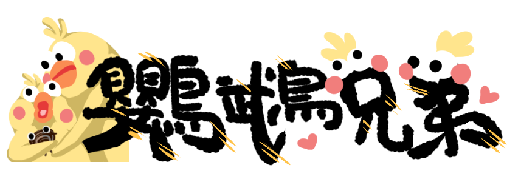

還記得前一陣子很流行的「嚇到吃手手」嗎？這句話來自於大家熟悉的鸚鵡兄弟梗圖！
雖然你可能覺得牠們就只是兩隻黃黃ㄉ雞嘛。
但牠們不是雞而是鸚鵡，還是一對兄弟！

起源
鸚鵡兄弟的其實是有名字的，牠們叫Poinko（ポインコ）兄弟。
比較瘦的是哥哥Poinko兄，角色設定是很寵弟弟，弟弟Poinko弟（真是隨便的取名）則是比較胖的那隻，體脂35%、特技是再吃一碗飯。
除了胖瘦外，還可以從Poinko兄弟的頭髮分辨牠們，Poinko兄頭上有三根頭毛，Poinko弟頭上只有兩根。
鸚鵡兄弟並不是什麼動畫的角色，而是由日本電信公司docomo，在2015年12月為了集點卡活動推出的吉祥物，Poinko是取「Point」（點數）與「inko」（鸚鵡的日文）的合體字。
散佈
兄弟倆經常出現在docomo的廣告裡，「嚇到吃手手」、「你的良心不會痛嗎」等鸚鵡兄弟的梗圖，就是中國網友截圖自這些廣告影片，加上文字所做成的！
鸚鵡兄弟2017年正當紅的時候，曾有熱心網友製作了能輕鬆上字的鸚鵡兄弟產生器，但或許是因為版權問題，產生器已不復存在。
鸚鵡家族
鸚鵡兄弟除了牠們兩個外，還有七位夥伴，包括擁有十根頭毛的金．Poinko大人ゴールドポインコ様、已經活了20086年的Poinko師父ポインコ師匠、Poinko界的戀愛大師、就算失戀也只要3秒就復活的Poinko姊姊ポインコネェさん等。
沒有錯，這麼詳盡的介紹就意味著牠們有自己的官網ポインコの世界を覗いてみよう！！可以去看看牠們的身影和角色設定、周邊商品、下載手機電腦桌面，還出了2019年的月曆喔！快去下載來用ㄅ。